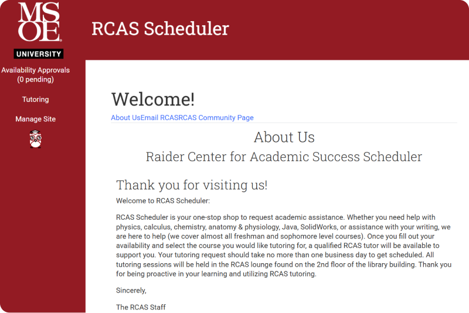

RCAS Website
Re-engineering a legacy Ruby on Rails platform to streamline academic mentoring, scheduling, and student support services at MSOE.

Tech Stack
Git, GitLab, Agile Workflows, Web Development, Ruby on Rails, Relational Databases
Role(s)
Scrum Master, DevOps Lead, Notetaker
Serving 350+ MSOE students & faculty.
Overview
The Raider Center for Academic Success (RCAS) platform is a full-stack web application built to consolidate academic tutoring, peer mentoring, and administrative scheduling into a single system for MSOE students. Inheriting a legacy codebase originally started in 2015, our four person team spent two semesters re-engineering the application to refactor core Ruby on Rails backend logic, modernize aging database schemas, and expand automated test coverage. These updates eliminated long-standing scheduling bugs, enhanced system security, and restored platform reliability for campus-wide use.
Key Technical Contributions & Features
Database Refactoring: Handled a full database overhaul to rename and restructure our core scheduling module, shifting legacy "One-on-One" tables over to a unified "Mentoring" setup across models, views, and controllers without breaking existing data. Backend Permissions & Security: Cleaned up authorization logic by pulling conditional permission checks out of views and putting them into model-level helpers ("fat model, skinny controller") to lock down access controls and block users from self-assigning appointments. Flexible Input Handling: Added custom input logic to the tutoring request form so students can type in unlisted professor names, keeping the form flexible without polluting or corrupting the admin master database. Automated & BDD Testing: Wrote Cucumber and Gherkin test scenarios to cover core scheduling workflows, and expanded our RSpec model/controller test suite to catch edge cases and bump up code coverage. Calendar & Scheduling Fixes: Fixed double-booking bugs with custom backend validations for tutors and students, and updated the frontend calendar to render a clean, rolling multi-week view.
Agile Process & Team Leadership
Scrum Master & DevOps Rotations: Ran sprint planning, daily standups, and retros while handling GitLab merge request reviews, branch workflows, and making sure our CI tests kept passing inside Docker. Backlog Grooming & Requirement Audits: Took charge of cleaning up backlog items, writing clear acceptance criteria, and re-weighting sprint tasks so the team didn't hit roadblocks during development.